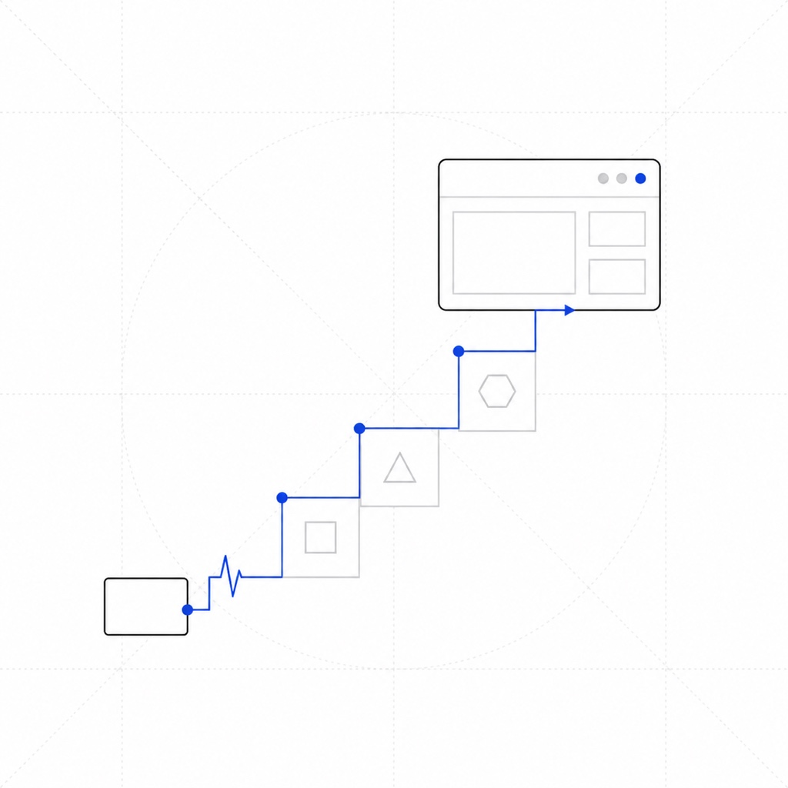
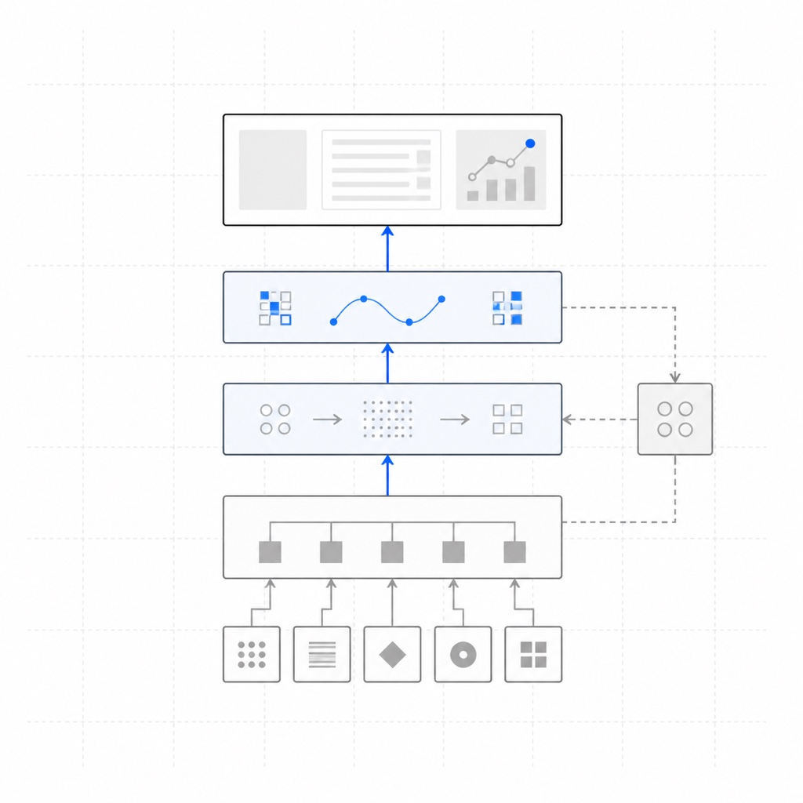

An Antora documentation platform: a themed UI bundle, a set of
Antora/Asciidoctor extensions, and the docouture CLI that scaffolds, serves, builds
and publishes a site built on top of them. See About.
docouture turns an Antora content tree into a themed, searchable
documentation site in one command — docouture new scaffolds it, docouture dev
serves it with live reload, and docouture publish gh-pages ships it.
Get started

Start here
Scaffold a site and see it running locally in a few commands.

Overview
What docouture actually ships, and why it exists.

Reference
Every docouture command, its flags, and what it actually does.

Design
How the CLI, the Antora pipeline and the themed UI bundle fit together.
Key features

docouture new lays down a full Antora site — content tree,
GitHub workflows, an AGENTS.md briefing for
coding agents — into an existing repository. docouture dev, docouture build and
docouture publish take it from there.

The UI bundle is a themed fork of Antora’s own default UI: dark/light mode, a version switcher, full-text search, and a set of authoring blocks — tabs, cards, accordions, feature tabs — with no plain AsciiDoc equivalent.


Every build publishes llms.txt/llms-full.txt for LLM
ingestion, and npx skills add InditexTech/docouture installs a set of agent skills
that plan, scaffold and keep a site’s content in sync with the repo it documents.
Open source
The CLI, the Antora/Asciidoctor extensions, the UI bundle (Apache-2.0/MPL-2.0 split, being a fork of antora-ui-default) and the release tooling are all open — see the FAQ below for the licence breakdown.
Frequently asked questions
What is docouture?
How do I create a new site?
npx @inditextech/docouture-cli new <name> — see Quickstart.
Can documentation be versioned?
Yes — standalone (stable + prerelease) or versioned (full release history). See Versioning modes.
Is docouture open source?
Yes — the CLI, extensions and UI bundle are all Apache-2.0 or MPL-2.0, with nothing embedded that restricts publishing a site — see the full FAQ for the licence breakdown.
See the full FAQ for more, including diagrams, search and publishing.